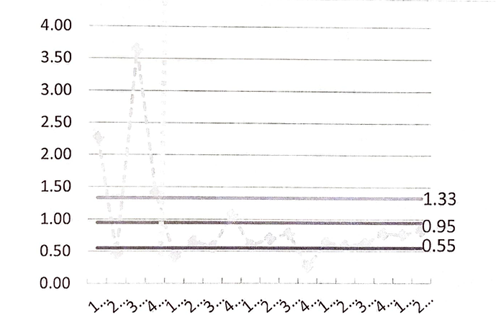
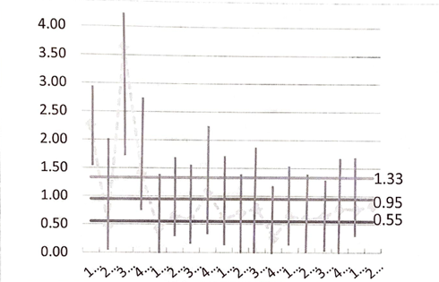

Evaluation of E-ICUs
Evaluation on effectiveness of E-ICU on patient mortality.
Summary
Due to the rising concerns of mortality rates of intensive care unit (ICU) patients in local/regional levels and the ineffectiveness of the current "Resource-Centered Care", new approaches, such as E-ICU, have been proposed. E-ICU is essentially an off-site communication center for individuals in the regions without sufficient resources to get medical assistance as well as receive evaluation for appropriate transfers. The current study aims to review the cost, efficiency, and quality of the measures provided by E-ICU to evaluate E-ICU as a possible alternative to the current system. The data available suggests that E-ICU promises better overall patient care and reduces mortality rare for the patients -enough to flag E-ICU as a candidate for a more rigorous study. However, it must be noted that there is a clear lack of data which greatly weakens any statistical methods applied. The convenience sampling based on the region due to the nature of how data collection methods were implemented further weakens the data and the consequent analysis.
Introduction
There is a clear and undeniable shortage of Intensive Units in the United States, a problem that is bound to worsen with the increase of the aging population. Based on U.S. Census in 2010, there were over 40.3 million individuals over 65, and it is predicted that there will be over 50 million such individuals by the year 2030. For the average patient, the lack of ICU is not the only issue. The total cost of ICU per night is over four times the cost per night of regular hospital floor. These suggest that there is a serious need for the cost, efficiency, and quality of care that patients are receiving to be addressed.
Furthermore, the complexity of today's medical services, especially of those regarding ICU, highlights the need for an off-site center dedicated to monitoring and guiding patient care. E-ICU strategizes to use the benefit of electronic, wireless communication to provide health information from the Intensive Care Unit of one hospital to another. The specialist located at E-ICU can provide real-time service to multiple hospitals without the physical boundary of locations.
E-ICU has the powers to monitor patients in real-time, order diagnostic tests and laboratory tests, as well as order treatment and physically intervene via the remote controlling of life support devices. There is great possibility in improving the quality of critical care patients and increase in productivity of intensive care specialists. The current study aims to explore the provided data to determine what the current evaluation and data can address, find shortcomings on the data collected, and suggest areas of improvements for the collection of data.
While the data suffer from the effects of low sample size and convenience sampling based on region, positive results should indicate the need for further studies.
Analysis
Above is a graph of the Severity-Adjusted ICU Mortality Ratio of the given data. While other adjustments exist, the current graph best visualizes the effect of the E-ICU System. At first sight, the graph indicates a significant difference before and after the implementation of the E-ICU. However, it is necessary to study the variance values of the second graph shown below.
The low number of data points and thus the high variation in the data suggests that almost all data points can reach the upper and lower limits that were established. While the general trend found suggests that further study should be continued for this presumably more effective system of treatment, data alone does not suggest any more than perhaps minimal improvements.
There are multiple plausible sources for the lack of clear improvements. The efficiency of E-ICU was likely undermined by the lack of participation from the caretakers (doctors and nurses) in the physical locations. Possibly due to their mistrust in the system or the intensive care specialists, or the lack of understanding of the E-ICU system. Lack of proper installments could also be an issue as E-ICU requires full-time high-speed internet from both locations to maximize its benefits.
Factors above also question the quality of care that Intensive Care Unit patients may be receiving through E-ICU. If the response from the physical location is not ideal, the quality of care that patients receive may see little to no improvement at all. Finally, even if such factors are to be accounted for, the substantial amount of capital required to set up and maintain an E-ICU system may deter other regions from implementing such systems.
More research and trials need to be done on the implementation of E-ICU. The results, or the lack thereof, of the tests do not mean that the E-ICU system is ineffective. It only serves to indicate that more data is required to reduce the variability so that the data could be re-evaluated with greater depth. The slight positive effect that was found, however minimal, suggests the value in continuing the data collection as the aging population and rising cost of the care are still fully in effect.
Data collection should be done more frequently and with more details. Ideally, more than 5 (the current number of hospitals using E-ICU) hospital data should be collected. Separating each care location from one another would also provide interesting information on what types and locations that the E-ICU system may prove to work more effectively on.
Conclusion
The current study on the effectiveness of E-ICU in three qualities of cost, efficiency, and quality left all three qualities in question. While a slight increase in quality of care that Intensive Care Unit patients received, the nature of the data and the methods by which the data were collected significantly undermines the results. However, the issues that currently threaten ICU systems persist, and the tests only show that the data is not sufficient enough to prove the effectiveness of E-ICU. In other words, it does not deny the potential that E-ICU still posses as an alternative to the current system. Thus, a further, more extensive study is recommended.